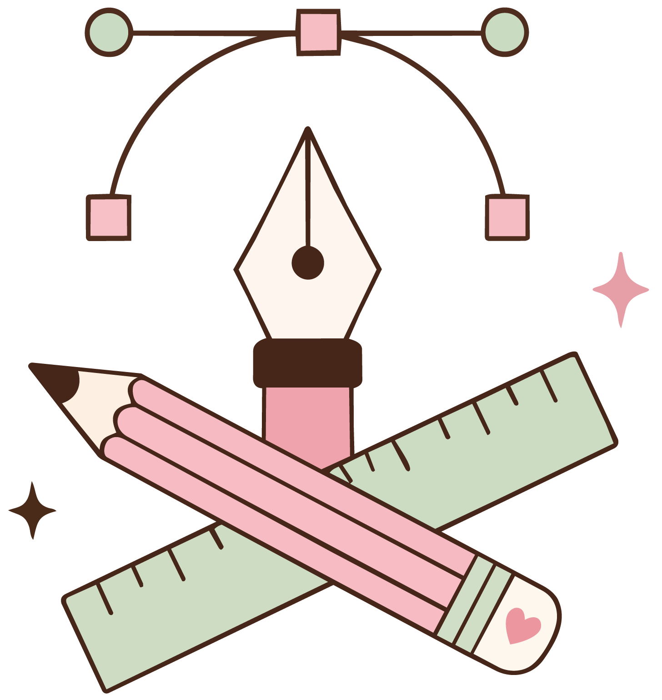
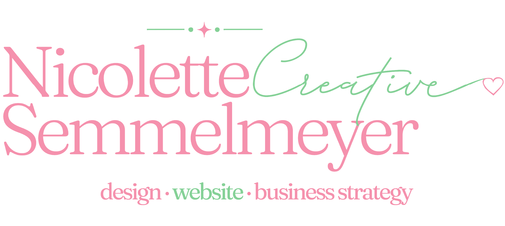
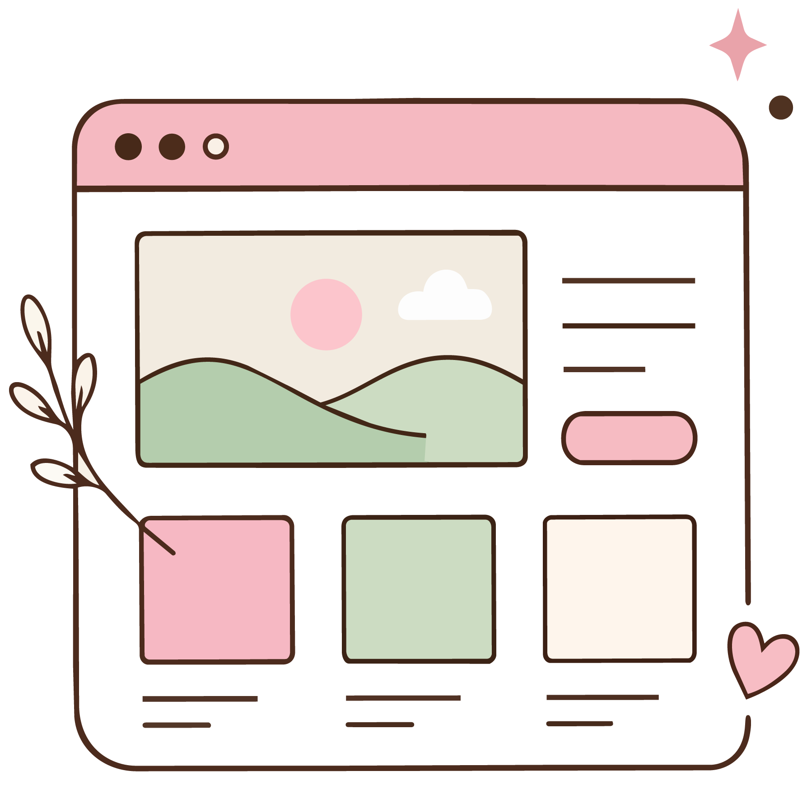
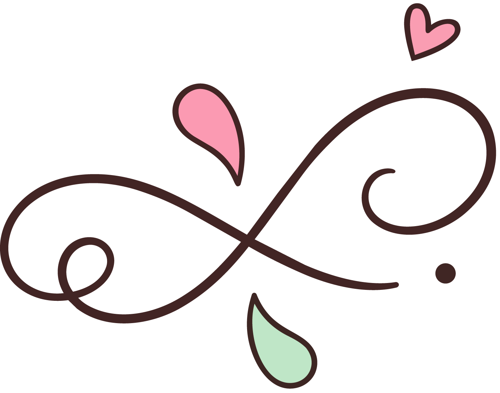
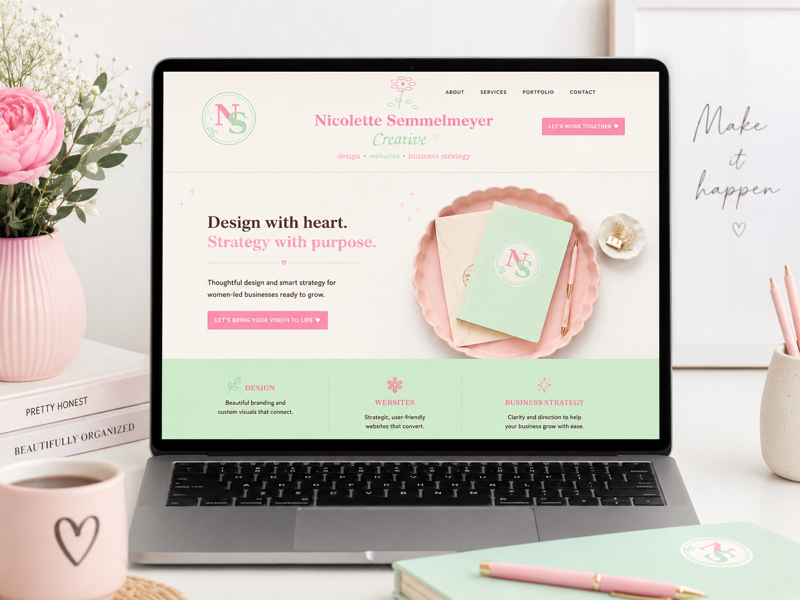

Design
I create flyers, business cards, posters, social media graphics, and branding materials that communicate your ideas clearly.

I am Nicolette Semmelmeyer, a graduating student with a background in business, web design, and graphic design. I help people make their ideas feel clear, polished, and ready to share.
View My Work
This website showcases my creative work and explains how I can help with websites, branding, social media graphics, flyers, business cards, and business strategy for new ideas or small businesses.

I create flyers, business cards, posters, social media graphics, and branding materials that communicate your ideas clearly.

Clean, organized websites that help visitors understand who you are, what you do, and how to contact you.

Guidance with audience, messaging, pricing ideas, launch planning, and business organization.

Explore examples of my web design, branding, graphic design, and business projects. Every project represents my passion for creating organized, polished, and meaningful work.
See PortfolioTake a look at my work or reach out to learn how we can work together.
Learn More